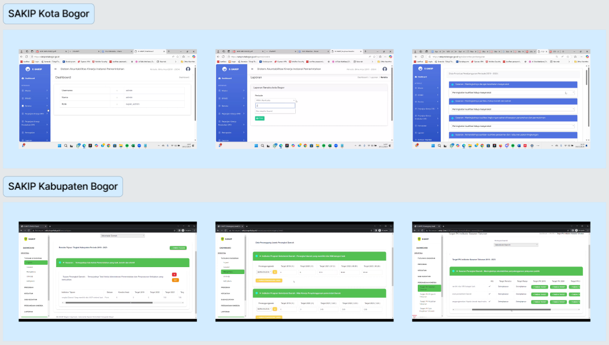
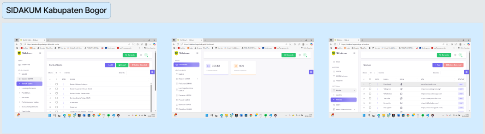
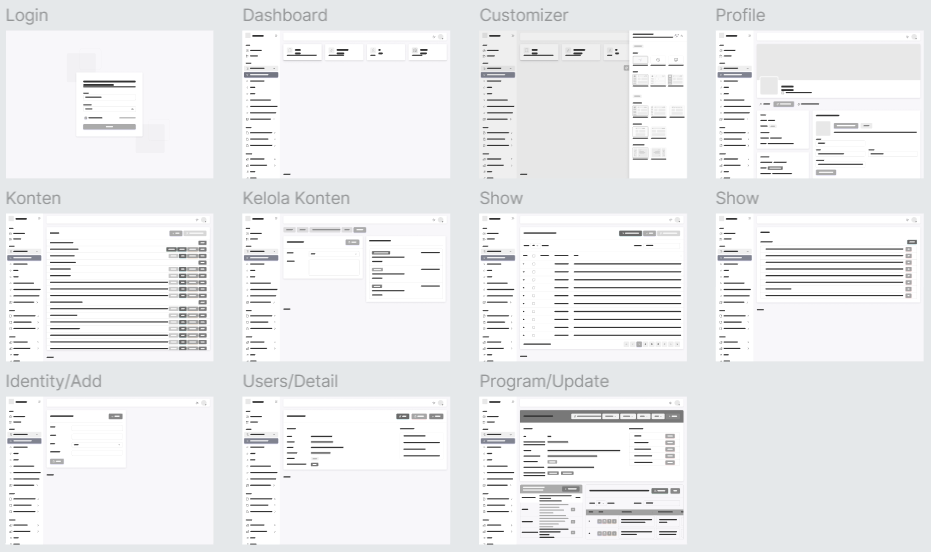
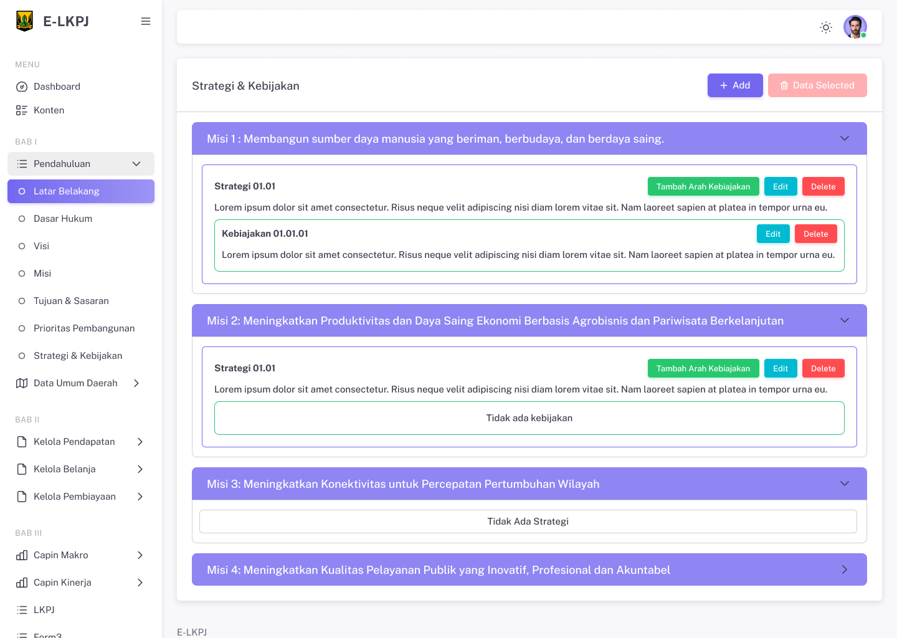
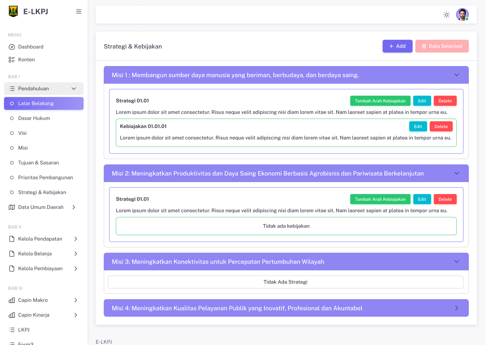
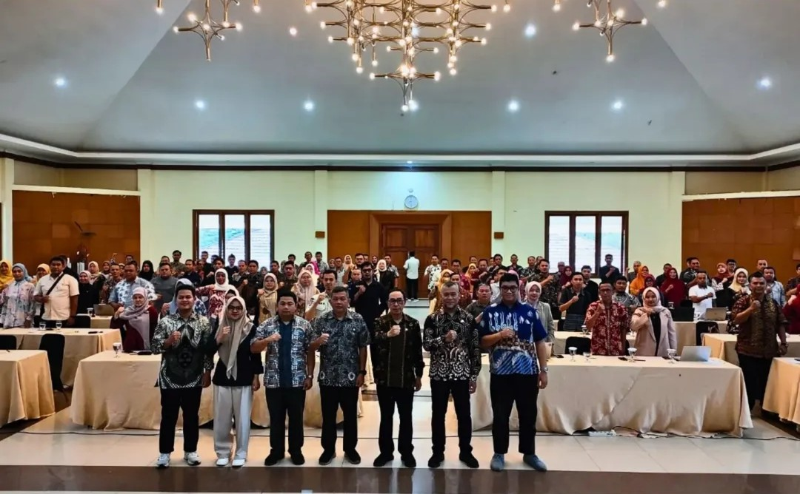
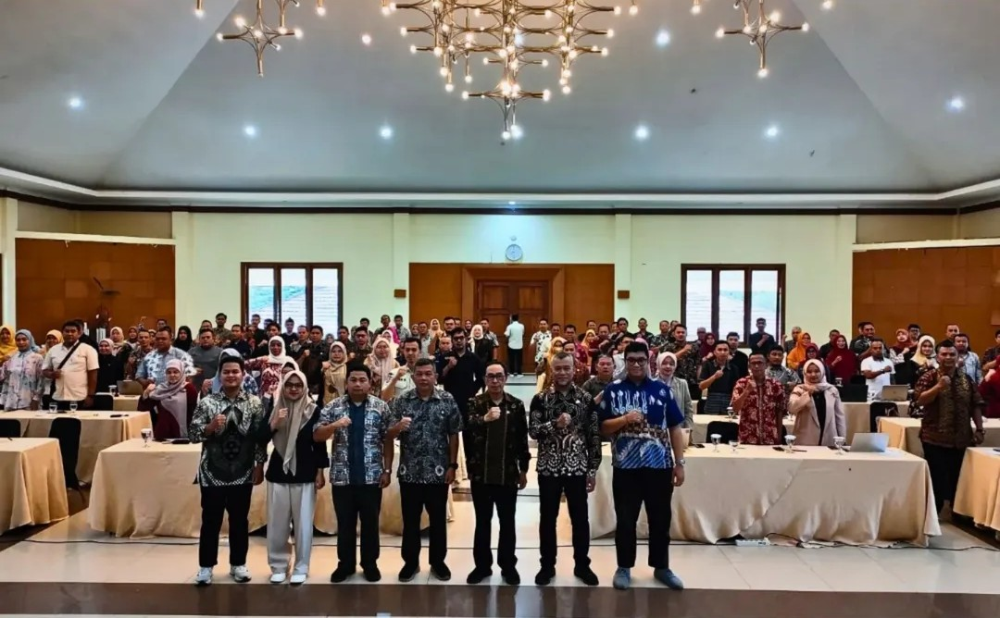

E-LKPJ Kabupaten Sukabumi
Perkenalan
📚 Apa itu E-LKPJ?
Elektronik Laporan Keterangan Pertanggungjawaban (E-LKPJ) adalah sistem yang mendukung penyusunan LKPJ pimpinan daerah di level Kabupaten/Kota dan Provinsi bertujuan untuk mengumpulkan dan memverifikasi data secara elektronik sehingga dapat mengingkatkan efektivitas, efisiensi, transparansi dan akuntabilitas dalam pemerintahan. Sistem ini merupakan sarana pelaporan pertanggungjawaban Kepala Daerah kepada DPRD.
🗂️ Latar Belakang Projek E-LKPJ
Adanya ketidaksinkronan data dalam proses penyusunan LKPJ yang dapat menghambat validitas dan efisiensi pelaporan sehingga berpotensi menyebabkan terlambatnya pengambilan keputusan dan evaluasi kinerja oleh DPRD. Untuk mengatasi masalah tersebut, Bagian Tata Pemerintahan Kabupaten Sukabumi menginisiasi adanya sistem E-LKPJ supaya memudahkan proses penyusunan laporan pemerintah daerah.
📱 Key Features
- 1. Input data laporan: pengguna mengisi dan mengirim laporan melalui sistem
- 2. Validasi oleh admin: admin memeriksa dan menyetujui laporan yang masuk
- 3. Activity log: untuk melakukan audit dan memonitor keamanan sistem secara real-time
- 4. Unduh laporan: laporan diunduh dalam format PDF, Excel dan Document
🎯 Project Direction
Desain diarahkan agar mudah dipahami dan digunakan mengingat latar belakang usia dan pengetahuan teknologi pengguna yang beragam:
- 1. Navigasi sederhana
- 2. Akses cepat ke laporan
- 3. Tampilan bersih dan fokus pada keterbacaan
- 4. Fungsionalitas sehingga efektif dan efisien
Peran Saya
-

Merancang komponen UI menggunakan auto-layout, variabel, dan properti varian, teks, dll.
-

Melakukan validasi desain ke Pengguna untuk memastikan solusi sesuai kebutuhan.
-

Menyusun design system Typography, Color dan lainnya secara terstruktur.
-

Membuat tampilan aplikasi dan menyerahkannya ke programmer untuk dikembangkan.
Alur Projek
👩💻 Lingkup dan Skala Proyek
Sistem E-LKPJ dirancang untuk memuat laporan pertanggungjawaban kinerja dari 82 perangkat daerah di Kabupaten Sukabumi. Rancangan sistem ini dibuat untuk mengakomodasi kebutuhan pelaporan tersebut secara efektif, terstruktur, dan mudah digunakan oleh perangkat daerah. Output utama sistem adalah dokumen LKPJ lengkap yang mencakup Bab 1 hingga Bab 5, sesuai format dan ketentuan yang berlaku. Berdasarkan informasi tersebut didapatkan:
-
01. Menu Navigasi
Sistem ini dirancang untuk menampung 60+ menu, yang menunjukkan luasnya cakupan fungsi yang disediakan untuk memenuhi kebutuhan pengguna.
-
02. Lima Tampilan Role yang Berbeda
Untuk memenuhi beragam kebutuhan operasional dan memastikan kontrol akses yang tepat, sistem ini dirancang secara detail dengan lima antarmuka terpisah yang disesuaikan untuk:
- 1. Super Admin: Akses penuh ke seluruh data, monitoring pelaporan
- 2. Penyusun: Mengisi dan mengunduh data laporan, menerima notifikasi koreksi
- 3. Reviewer: Meninjau laporan yang diinput oleh penyusun dan perangkat daerah, memberikan catatan koreksi
- 4. Perangkat Dearah: Menginput BAB III sesuai format, melihat status laporan dan menindaklanjuti revisi yang diberikan reviewer atau super admin
- 5. DPRD: Akses read-only laporan final
👤 User Persona & Use Case
01. User Persona
Persona mewakili tipe pengguna yang akan memakai sistem, supaya tim desain & pengembang selalu punya acuan “siapa yang kita buatkan produk ini”.


02. Use Case
Use case menjelaskan skenario spesifik bagaimana setiap role akan berinteraksi dengan sistem untuk mencapai tujuan tertentu.

🔍 Benchmarking
Proses perancangan antarmuka sistem dilakukan dengan mengacu pada benchmark dari Sistem Akuntabilitas Kinerja Instansi Pemerintah (SAKIP) Kota Bogor dan Kabupaten Bogor yang sudah dikembangkan perusahaan sebelumnya, karena kedua sistem tersebut memiliki fitur pelaporan yang relevan. Alur pengisian laporan pada E-LKPJ mengikuti pola yang digunakan di SAKIP, kemudian dikembangkan menjadi lebih kompleks karena mencakup pengelolaan anggaran.

Selain itu, untuk bagian tampilan, benchmarking juga dilakukan terhadap SIDAKUM (Sistem Informasi Data Koperasi dan UMKM) Kabupaten Bogor, khususnya pada penyajian informasi dalam bentuk tabel data agar mudah dipahami.

📊 User Flow
Saya menyusun User Flow untuk memetakan alur interaksi pengguna dari awal hingga mencapai tujuan dalam sistem. Proses ini dilakukan dengan mempertimbangkan lima role serta aktivitas & hak aksesnya dalam sistem.


🪟 Wireframe
Berfungsi sebagai kerangka visual sederhana untuk merancang tata letak dan alur antarmuka sebelum desain detail dan pengembangan.

⚛️ Design System
Saya membangun Design System berbasis pendekatan Atomic Design System untuk memastikan konsistensi antarmuka. Pendekatan ini memungkinkan saya menyusun elemen UI mulai dari level terkecil seperti atoms (warna, tipografi, spacing), molecules (form input, button group), hingga organisms (form section, header).


Note : Hanya sebagian design system yg ditampilkan
💻 High-Fidelity Design
Berikut hasil rancangan antarmukanya yang kemudian diserahkan kepada tim pengembang (programmer) sebagai acuan implementasi dan dilanjutkan ke tahap pengkodean.
 

Note : Hanya sebagian design yg ditampilkan
Dokumentasi Pengembangan
Pengembangan sistem menggunakan metode Scrum yaitu pendekatannya yang iteratif dan fleksibel, memungkinkan tim untuk mengembangkan desain secara bertahap, menyesuaikan produk berdasarkan umpan balik pengguna.
Perilisan Sistem
Sistem E-LKPJ telah resmi diluncurkan dan digunakan oleh 82 perangkat daerah di lingkungan Pemerintah Kabupaten Sukabumi sebagai media pelaporan pertanggungjawaban kinerja secara digital.
 

Sukabumi, Kamis, 06-02-2025.
Pelajaran yang Didapat
Dari proyek ini, saya memperoleh beberapa wawasan berharga, antara lain:
- 1. Pengembangan End-to-End dalam Konteks Pemerintahan: Memperoleh pemahaman mendalam tentang siklus pengembangan produk secara menyeluruh, dengan memenuhi standar regulasi dan IT Government
- 2. Adaptasi Metodologi Agile: Belajar beradaptasi dengan perubahan dan melakukan iterasi cepat dalam lingkungan agile scrum
- 3. Kolaborasi Intensif Tim Lintas Fungsi: Terlibat dalam sesi meeting berkelanjutan, menerima umpan balik dari pengguna, dan melakukan penyesuaian desain bersama tim pengembang untuk memastikan kelayakan teknis dan keselarasan bisnis
- 4. Mengelola Kompleksitas dan Skala Proyek Besar: Menguasai pengelolaan proyek berskala besar dan kompleks dengan menekankan pengelolaan design system dan dokumentasi yang rapi.